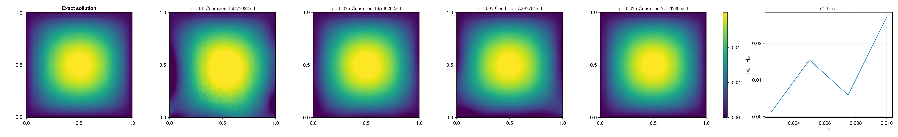
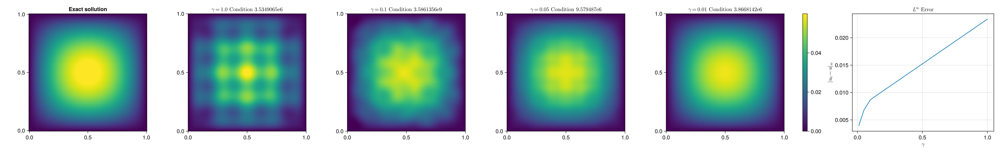
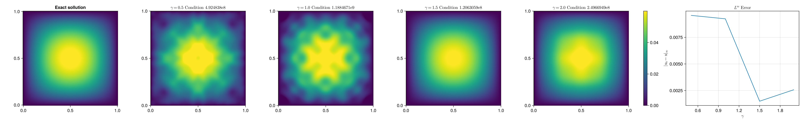
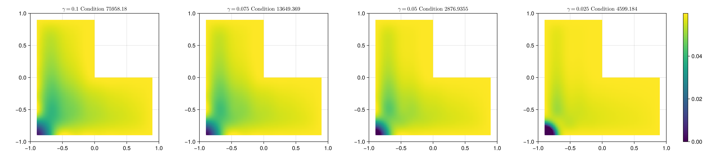
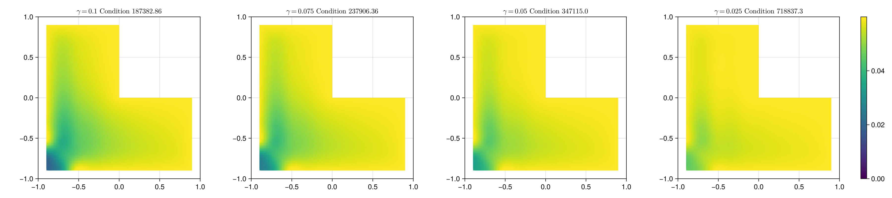

Kernel Collocation Excercise
Table of Contents
1. Projection Approach
Aim of this excrcise is to find solutions \(u\in \mathcal{H}_k\) such that they satisfy the following system
\begin{align} \label{eq:pde} - \nabla \cdot \left( a(x) \nabla u(x) \right) &= f(x) & \text{in} \quad \Omega \\ u(x) &= g_D(x) & \text{on} \quad \Gamma_D \\ \left( a(x) \nabla u(x) \right) \cdot \vec{n}(x) &= g_N & \text{on} \quad \Gamma_N \end{align}we do this by projecting the system onto \(\mathcal{H}_k(\Omega)\)
\begin{align} \label{eq:pde_H} \left< - \nabla \cdot \left( a(x) \nabla u(x) \right),\phi \right>&= \left< f(x) ,\phi \right> & \text{in} \quad \Omega , \phi \in \mathcal{H}_{k} \\ \left< u(x) , \phi \right>&= \left< g_D(x) , \phi \right> & \text{on} \quad \Gamma_D \\ \left< \left( a(x) \nabla u(x) \right) \cdot \vec{n}(x) , \phi \right>&= \left< g_N ,\phi \right> & \text{on} \quad \Gamma_N \end{align}Let \( \hat{X}:=\left\{ x_j \right\}_{j=1}^n \subset\RR ^d\). Since \(\left\{ k(x_i,\cdot ) \right\}_{i=1}^n\) is the basis of a finite subspace in \(\mathcal{H}_k\) it also has to hold
\begin{align} \label{eq:pde_proj} \left< - \nabla \cdot \left( a(x) \nabla u(x) \right),k(x_i,\cdot ) \right>&= \left< f(x) ,k(x_i,\cdot ) \right> & \text{in} \quad \Omega , x_i \in X \\ \left< u(x) , k(x_i,\cdot ) \right>&= \left< g_D(x) , k(x_i,\cdot ) \right> & \text{on} \quad \Gamma_D \\ \left< \left( a(x) \nabla u(x) \right) \cdot \vec{n}(x) , k(x_i,\cdot ) \right>&= \left< g_N , k(x_i , \cdot ) \right> & \text{on} \quad \Gamma_N \end{align}We assuming \(f,g_D , g_N(\cdot ,\vec{n}) \in \mathcal{H}_k\) i.e. \(\left< f , k(x_i , \cdot ) \right> = f(x_i)\) etc. We search for a finite approximation \(u_h \approx u\) such that it satisfies \eqref{eq:pde_proj} where
\begin{align} \label{eq:approx} u_h(x) &= \sum_{j=1}^{n} a_j k(x_j,x) \end{align}correspondingly we are able to directly compute
\begin{align*} \nabla_x u_h(x) &= \sum_{j=1}^n a_j \nabla_x k(x_j ,x) \\ - \nabla_x \cdot \left( a(x) \nabla_x u_h(x) \right) &= - \nabla_x a(x) \cdot \nabla_x u(x) - a(x) \Delta_x u(x) \\ &= - \sum_{j=1}^{n} a_j \left( \nabla_x a(x) \cdot \nabla_x k(x_j,x) + a(x) \Delta_x k(x_j,x)\right) \end{align*}this leads to the following Linear system
\begin{align} \label{eq:pde-sys} - \sum_{j=1}^{n} a_j \left( \nabla_{x_i} a(x_i) \cdot \nabla_{x_i} k(x_j,x_i) + a(x_i) \Delta_{x_i} k(x_j,x_i)\right)&= f(x_i) & x_i\in \Omega , x_i \in X \\ \sum_{j=1}^{n} a_j k(x_j,x_i)&= g_D(x_i) & x_i\in \Gamma_D \\ \sum_{j=1}^n a_j \left( a(x_i) \nabla_{x_i} k(x_j ,x_i) \cdot n_i \right) &= g_N(x_i , n_i) & x_i \in \Gamma_N \end{align}this corresponds directly with the System Matrix \(K\), that we compute in julia using a GPU compatmible kernel that employs element wise notation
@kernel function system_matrix!(K ,@Const(X), a , ∇a ,k, ∇k, Δk , sdf , grad_sdf , sdf_beta) Iᵢⱼ = @index(Global , Cartesian) @inbounds xᵢ= SVector{2}(view(X, : , Iᵢⱼ[1])) # Essentially X[:,i] @inbounds xⱼ= SVector{2}(view(X, : , Iᵢⱼ[2])) # Essentially X[:,j] # poisson equation @inbounds K[Iᵢⱼ] = -a(xᵢ)*Δk(xⱼ ,xᵢ)- ∇a(xᵢ)⋅∇k(xⱼ ,xᵢ) if abs(sdf(xᵢ)) < 1e-10 if sdf_beta(xᵢ) < 0 # Neumann Boundary Condition @inbounds nᵢ= grad_sdf(xᵢ) @inbounds K[Iᵢⱼ] = a(xᵢ) * (nᵢ ⋅ ∇k( xⱼ , xᵢ )) else # Dirichlet Boundary @inbounds K[Iᵢⱼ] =k(xᵢ , xⱼ) end end end
julia-async:50c35846-ece5-4961-8a3a-800152c4bb4f
1.1. right hand side
The right hand side of the system is computed in a similar Fashion
@kernel function apply_function_colwise!(B ,@Const(X) , f , g_D , g_N , sdf , grad_sdf, sdf_beta) # boilerplate Iᵢ = @index(Global , Cartesian) @inbounds xᵢ= SVector{2}(view(X , : , Iᵢ[1])) # poisson equation @inbounds B[Iᵢ] = f(xᵢ) if abs(sdf(xᵢ)) < 1e-10 if sdf_beta(xᵢ) < 0 # Neumann Boundary Condition @inbounds nᵢ= grad_sdf(xᵢ) @inbounds B[Iᵢ] = g_N(xᵢ , nᵢ ) else # Dirichlet Boundary @inbounds B[Iᵢ] = g_D(xᵢ) end end end
1.2. Kernel Matrix for evaluation
@kernel function kernel_matrix!(A , @Const(X_test) , @Const(X_col) ,k , sdf) Iᵢⱼ = @index(Global , Cartesian) @inbounds xᵢ= SVector{2}(view(X_test , : , Iᵢⱼ[1])) # Essentially X[:,1] @inbounds xⱼ= SVector{2}(view(X_col , : , Iᵢⱼ[2])) K = k(xᵢ , xⱼ) # Mask outside Domain with NaN if sdf(xᵢ) > 0 K = NaN end @inbounds A[Iᵢⱼ] = K end
2. Solver
Our implementation Provides some structs for convenience. A PDESystem that stores the Data functions of a diffusion PDE together with the kernel and its derrivatives \(k , \nabla k , \Delta k\) and information about the Domain of the problem in form if its signed distance function and Its gradient (for normals at the boundary)
struct PDESystem k :: Function ∇k :: Function Δk :: Function a :: Function ∇a::Function f::Function g_D::Function g_N::Function sdf::Function grad_sdf::Function sdf_beta::Function end
We provide a PDESolver that stores The PDE system, Collocation points \(\hat{X}\) , and the solution vector \(\alpha \) in \(u_h = \sum_{j=0}^n \alpha_j k(x_j , \cdot )\)
struct PDESolver S::PDESystem X::AbstractMatrix α :: AbstractVector end
PDESolver Provides methods for evaluation itselve on a test dataset
function (f::PDESolver)(X) dev = get_backend(X) print("Backend" , dev) K = KernelAbstractions.zeros(dev , Float32, size(X,2) , size(f.X ,2)) print("Size of the system Matrix:" , size(K)) km! = kernel_matrix!( dev , 256 , size(K)) km!(K, X , f.X , f.S.k , f.S.sdf ) return K * f.α , K end
As well as a method to solve the approximation system and return a instance of PDESystem
function solve(S, X_col) dev = get_backend(X_col) K = KernelAbstractions.zeros(dev , Float32 , size(X_col , 2) , size(X_col , 2) ) sys_matrix! = system_matrix!( dev , 256 , size(K)) sys_matrix!(K ,X_col , S.a , S.∇a , S.k , S.∇k , S.Δk , S.sdf , S.grad_sdf , S.sdf_beta ) B = get_boundary(S,X_col) α = K \ B return (PDESolver(S,X_col ,α) , K) end
function get_boundary( S, X ) dev = get_backend(X) B = KernelAbstractions.zeros(dev , Float32 , size(X , 2)) apply! = apply_function_colwise!(dev , 256 , size(B)) apply!(B , X , S.f , S.g_D , S.g_N , S.sdf , S.grad_sdf, S.sdf_beta) return B end
end
we tested our solver for compatibility with a CPU and A GPU Backend on a modern 16Core CPU and a RTX 4070. The GPU backend was ~8x faster for a system with 10000 DOF. (~120ms vs ~1.s)
3. Kernel Implementation
As kernels we use Radial Basis Kernels (RBF) \(k(x,x') := \phi (\frac{\|x-x'\|}{\gamma})\). That consist of a radial basis function \(\phi \) as well as a scaling factor \(\gamma \) where \(\nabla_x , \Delta_x\) are the partial gradients and laplacians with respect to the second argument of \(k(x_j, \cdot )\). for a radial basis function \(\phi (r^2) \in C^2(\RR)\) and a corresponding RBF kernel they can be computed directly
\begin{align} \label{eq:2} \nabla_x k(x',x) &= \phi'\left(\frac{\|x - x'\|}{\gamma}\right) \cdot \frac{x - x'}{\gamma\|x - x'\|} \\ \Delta_x k(x',x) &= \frac{1}{\gamma^2} \phi''\left(\frac{\|x - x'\|}{\gamma}\right) + \frac{1}{\gamma} \frac{d - 1}{\|x - x'\|} \cdot \phi'\left(\frac{\|x - x'\|}{\gamma}\right) \end{align}where \(d\) is the dimension of \(x\). Note that those expressions are singular for \(r=0\). we prevent this numerically by using \(\max(10^{-15} , r)\) instead of \(r\).
using StaticArrays @inline function k(ϕ::RBFType , ::Val{γ},x̂::SVector{N} ,x::SVector{N}) where {N , γ , RBFType} r = max(1e-15,norm(x-x̂)) ϕ(r/γ) end @inline function ∇k(dϕ::dRBFType , ::Val{γ} ,x̂::SVector{N} ,x::SVector{N}) where {N , γ , dRBFType} r = max(1e-15,norm(x-x̂)) (x-x̂)*dϕ(r/γ) * 1/(r*γ) end @inline function Δk(d²ϕ::ddRBFType, dϕ::dRBFType , ::Val{γ} ,x̂::SVector{N} ,x::SVector{N}) where {N , γ , ddRBFType , dRBFType} r = max(1e-15,norm(x-x̂)) 1/γ^2 * d²ϕ(r/γ) + 1/γ * (N-1)/r *dϕ(r/γ) end
3.1. squared rbf
for a squared RBF the kernels \(k(x,x') := \phi (\frac{\|x-x'\|^2}{\gamma})\) are simpler. and non singular
\begin{align} \label{eq:sqr-rbf} \nabla_x k(x',x) &= \phi'\left(\frac{r^2}{\gamma}\right) \cdot \frac{x - x'}{\gamma} \\ \Delta_x k(x',x) &= \frac{1}{\gamma } (4 * \frac{r^2}{\gamma^2} \phi''\left(\frac{r^2}{\gamma}\right) + 2d\phi'\left(\frac{r^2}{\gamma}\right)) \end{align}using StaticArrays using LinearAlgebra @inline function ksq(ϕ::RBFType , ::Val{γ},x̂::SVector{N} ,x::SVector{N}) where {N , γ , RBFType} r = dot(x-x̂,x-x̂) ϕ(r/γ) end @inline function ∇ksq(dϕ::dRBFType , ::Val{γ} ,x̂::SVector{N} ,x::SVector{N}) where {N , γ , dRBFType} r = dot(x-x̂,x-x̂) 2/γ^2*(x-x̂)*dϕ(r/γ) end @inline function Δksq(d²ϕ::ddRBFType, dϕ::Function , ::Val{γ} ,x̂::SVector{N} ,x::SVector{N}) where {N , γ , ddRBFType , dRBFType} r = dot(x-x̂,x-x̂) 1/γ^2 * 4*r * d²ϕ(r/γ) + 2/γ*N*dϕ(r/γ) end
julia-async:70c08408-31c3-4adc-bc82-d8865b93b190
3.2. Gauss
using StaticArrays @inline function rbf_gaussian(r) exp(-r) end @inline function d_rbf_gaussian(r) -exp(-r) end @inline function dd_rbf_gaussian(r) exp(-r) end
julia-async:f3f21d6e-71df-4891-8781-f0dd47c6dd10
using GLMakie X = range(-2 , 2 , 100) using LinearAlgebra fig = Figure() ax = Axis(fig[1,1]) lines!(ax , X ,x-> rbf_gaussian(x^2), label=L"gauss") lines!(ax , X ,x-> -2x* d_rbf_gaussian(x^2) , label=L"\partial gauss") lines!(ax , X ,x-> 4x^2* dd_rbf_gaussian(x^2) , label=L"\partial^2 gauss") axislegend(ax) save("images/gauss-rbf.png",fig )

3.3. Cardinal B3 Spline
function B_3(r) r_prime = r+2 return 1/24 * ( 1 *max(0, (r_prime - 0))^3 -4*max(0, (r_prime - 1))^3 +6*max(0, (r_prime - 2))^3 -4*max(0, (r_prime - 3))^3 +1*max(0, (r_prime - 4))^3 ) end function d_B_3(r) r_prime = r+2 return 1/8 * ( 1 *max(0, (r_prime - 0))^2 -4*max(0, (r_prime - 1))^2 +6*max(0, (r_prime - 2))^2 -4*max(0, (r_prime - 3))^2 +1*max(0, (r_prime - 4))^2 ) end function dd_B_3(r) r_prime = r+2 return 1/4 * ( 1 *max(0, (r_prime - 0)) -4*max(0, (r_prime - 1)) +6*max(0, (r_prime - 2)) -4*max(0, (r_prime - 3)) +1*max(0, (r_prime - 4)) ) end
using GLMakie using LaTeXStrings X = range(-2 , 2 , 100) Y = range(-2 , 2 , 100) fig = Figure() ax = Axis(fig[1,1]) lines!(ax , X , B_3 , label=L"B_3") lines!(ax , X , d_B_3 , label=L"\partial B_3") lines!(ax , X , dd_B_3 , label=L"\partial^2 B_3") axislegend(ax) save("images/b-spline.png",fig )

3.4. Thin Plate
note that the thin plate kernel is not p.d. it is c.p.d. However this seemed a non issue numerically
function thin_plate(r) r == 0.0 && return 0.0 return 0.5* r * log(r) end function d_thin_plate(r) r == 0.0 && return 0.0 return 0.5 * log(r) + 1 end function dd_thin_plate(r) r == 0.0 && return 0.0 return 0.5 * 1/r end
dd_thin_plate (generic function with 1 method)
using GLMakie X = range(0 , 1 , 100) Y = range(-5 , 5 , 100) fig = Figure() ax = Axis(fig[1,1]) lines!(ax , X , x-> x^2 * log(x), label=L"T") lines!(ax , X , x-> 2x * log(x) + x , label=L"\partial T") lines!(ax , X , x-> 2log(x) + 3 , label=L"\partial^2 T") axislegend(ax) save("images/plate-spline.png",fig )

4. PDE
To use our PDE solver we include all our modules
using Revise using LinearAlgebra includet("src/pdesolver.jl") includet("src/domains.jl") includet("src/rbf.jl") using .PDESolvers using .Domains using .RadialBasisKernels
and generate a set of collocation and test points. If a functional CUDA GPU is available, we move the data to the GPU. The solver will then attempt so solve on the GPU. Anoyingly all functions have to be known at compile time, when using the GPU backend.
using CUDA dev = CUDA.functional() ? cu : Array #dev = Array X = range(0 , 1 , 20) Y = range(0 , 1 , 20) X_col = [ [x,y] for x in X , y in Y] X_col = reduce(vcat ,X_col ) X_col = reshape(X_col, 2,:) |> dev X_t = range(0 , 1 , 100) Y_t = range(0 , 1 , 100) X_test = [ [x,y] for x in X_t , y in Y_t] X_test = reduce(vcat , X_test) X_test = reshape(X_test, 2,:) |> dev X_lol = rand(2,400) |> dev size(X_col)
(2 400)
4.1. PDE Poisson
with \(a(x) = 1 , g_{D}(x) = 0\) and \(\Gamma_{N} = \emptyset \) this method is able to model the poisson equation
\begin{align} \label{eq:poisson} - \Delta u(x) &= f(x) & \text{in} \quad \Omega \\ u(x) &= 0 & \text{on} \quad \Gamma_D \end{align}using StaticArrays function domain(x::SVector{2}) return sdf_square(x , 0.5 , SVector(0.5,0.5)) end function ∇domain(x::SVector{2}) return sdf_square_grad(x , 0.5 , SVector(0.5,0.5)) end function sdf_β(x::SVector{2}) return sdf_square(x , 0. , SVector(-1.,-1) ) end a(x::SVector{2}) = 1 ∇a(x::SVector{2}) = SVector{2}(0.,0.) f(x::SVector{2}) =2 * (x[1]+x[2] - x[1]^2 - x[2]^2) g_D(x::SVector{2})= 0 g_N(x::SVector{2} , n::SVector{2}) = 0
4.1.1. Plotting Utility
using LaTeXStrings function plot(fig , i,::Val{γ} , limits , errors, rbf , d_rbf , dd_rbf) where γ @inline k_rbf(x,y) = @inline k( rbf ,Val(γ), x,y) @inline ∇k_rbf(x,y) =@inline ∇k(d_rbf,Val(γ), x,y) @inline Δk_rbf(x,y) =@inline Δk(dd_rbf , d_rbf ,Val(γ), x,y) S_gauss = PDESystem(k_rbf , ∇k_rbf , Δk_rbf , a, ∇a , f, g_D ,g_N , domain , ∇domain , sdf_β ) solution , K = solve(S_gauss ,X_col); ax = Axis(fig[1,i] , title=L"$\gamma=%$γ$ Condition %$(cond(K))", aspect=DataAspect()) sol , K_t = solution(X_test) push!(errors , norm(Array(sol) - u.(eachcol(Array(X_test))) , Inf)) sol = reshape(Array(sol) , size(X_t,1) , :) hm = heatmap!(ax , X,Y, sol , colorrange=limits) return fig end function plotsq(fig , i,::Val{γ} , limits , errors, rbf , d_rbf , dd_rbf) where γ @inline k_rbf(x,y) = @inline ksq( rbf ,Val(γ), x,y) @inline ∇k_rbf(x,y) =@inline ∇ksq(d_rbf,Val(γ), x,y) @inline Δk_rbf(x,y) =@inline Δksq(dd_rbf , d_rbf ,Val(γ), x,y) S_gauss = PDESystem(k_rbf , ∇k_rbf , Δk_rbf , a, ∇a , f, g_D ,g_N , domain , ∇domain , sdf_β ) solution , K = solve(S_gauss ,X_col); ax = Axis(fig[1,i] , title=L"$\gamma=%$γ$ Condition %$(cond(K))", aspect=DataAspect()) sol , K_t = solution(X_test) push!(errors , norm(Array(sol) - u.(eachcol(Array(X_test))) , Inf)) sol = reshape(Array(sol) , size(X_t,1) , :) hm = heatmap!(ax , X,Y, sol , colorrange=limits) return fig end
plotsq (generic function with 1 method)
4.1.2. Results
using GLMakie fig = Figure(size=(2600,400)) limits = (0, 0.06) errors = Vector{Float32}() u(x , y) = x * (1-x) * y* ( 1- y) u(x) = u(x[1] , x[2]) for (i,gamma) in enumerate([Val(0.1) , Val(0.075) , Val(0.05) , Val(0.025)]) plotsq(fig , i,gamma , limits , errors , rbf_gaussian , d_rbf_gaussian , dd_rbf_gaussian) end ax = Axis(fig[1,0] , title="Exact sollution" , aspect=DataAspect()) hm = heatmap!(ax,X_t,Y_t,u , colorrange=limits) Colorbar(fig[:, end+1], hm) ax = Axis(fig[1,end+1] , title=L"$L^\infty$ Error" , xlabel=L"\gamma" , ylabel=L"|u_h - u |_\infty") lines!(ax , [0.01 , 0.0075 , 0.005 , 0.0025] , errors) save("images/gauss-kernel.png",fig )

Figure 1: gauss kernel with various values for \(\gamma \)
using GLMakie fig = Figure(size=(2600,400)) limits = (0, 0.06) errors = Vector{Float32}() for (i,gamma) in enumerate([Val(1.0) , Val(0.1) , Val(0.05) , Val(0.01)]) plotsq(fig , i,gamma , limits , errors , thin_plate , d_thin_plate , dd_thin_plate) end u(x , y) = x * (1-x) * y* ( 1- y) u(x) = u(x[1] , x[2]) ax = Axis(fig[1,0] , title="Exact sollution" , aspect=DataAspect()) hm = heatmap!(ax,X_t,Y_t,u , colorrange=limits) Colorbar(fig[:, end+1], hm) ax = Axis(fig[1,end+1] , title=L"$L^\infty$ Error" , xlabel=L"\gamma" , ylabel=L"|u_h - u |_\infty") lines!(ax , [1.,0.1,0.05,0.01] , errors) save("images/thin-plate-kernel.png",fig )

using GLMakie fig = Figure(size=(2600,400)) limits = (0, 0.06) errors = Vector{Float32}() for (i,gamma) in enumerate([Val(0.5) , Val(1.0) , Val(1.5) , Val(2.0)]) plot(fig , i,gamma , limits , errors , B_3 , d_B_3 , dd_B_3) end u(x , y) = x * (1-x) * y* ( 1- y) u(x) = u(x[1] , x[2]) ax = Axis(fig[1,0] , title="Exact sollution" , aspect=DataAspect()) hm = heatmap!(ax,X_t,Y_t,u , colorrange=limits) Colorbar(fig[:, end+1], hm) ax = Axis(fig[1,end+1] , title=L"$L^\infty$ Error" , xlabel=L"\gamma" , ylabel=L"|u_h - u |_\infty") lines!(ax , [0.5,1.,1.5,2.] , errors) save("images/B3-spline-kernel.png",fig )

4.2. Diffusion PDE
we evaluate the diffusion PDE with
\begin{align*} a(x) &= x_1 +2 \\ f(x) &= - \alpha \|x\|^{\alpha -2} * (3x_1 + 4) - \alpha * (\alpha -2) * (x_1 +2) * \|x\|^{\alpha -3} \\ g_D(x) &= \|x\|^{\alpha }\\ g_{N}(x,n) &= \alpha \|x\|^{\alpha -2}* (x_1 +2) * x \cdot n \end{align*}where
using StaticArrays a(x::SVector{2}) = x[1] + 2 ∇a(x::SVector{2}) = SVector{2}(1.,0.) α = 0.5 β = 0.2 f(x::SVector{2} , ::Val{α}) where α = - α*norm(x ,2)^(α - 2)*(3x[1] +4) - α*(α -2) * (x[1] + 2) * norm(x,2)^(α - 3) g_D(x::SVector{2} , ::Val{α}) where α = norm(x,2)^α g_N(x::SVector{2} , n::SVector{2} , ::Val{α}) where α = α* norm(x,2.)^(α-2.)*(x[1] +2.) * x ⋅ n f(x) = f(x,Val(α)) g_D(x) = g_D(x,Val(α)) g_N(x, n) = g_N(x , n,Val(α)) function sdf_β(x::SVector{2}) return sdf_square(x , β , SVector(-1.,-1) ) end
sdf_β (generic function with 1 method)
And select a collocation set filtered to be inside the domain
X = range(-1 , 1 , 11) Y = range(-1 , 1 , 11) X_col = [ [x,y] for x in X , y in Y] X_col = reduce(vcat ,X_col ) X_col = reshape(X_col, 2,:) X_col = filter(x -> sdf_L(SVector{2}(x)) <= 0 , eachcol(X_col)) X_col = reduce(hcat , X_col) |> dev X_t = range(-1.1 , 1.1 , 100) Y_t = range(-1.1, 1.1 , 100) X_test = [ [x,y] for x in X_t , y in Y_t] X_test = reduce(vcat , X_test) X_test = reshape(X_test, 2,:) |> dev size(X_col)
(2 96)
4.2.1. Plotting utility
using LaTeXStrings function plotdiff(fig , i,::Val{γ} , limits , rbf , d_rbf , dd_rbf) where γ @inline k_rbf(x,y) = @inline k( rbf ,Val(γ), x,y) @inline ∇k_rbf(x,y) =@inline ∇k(d_rbf,Val(γ), x,y) @inline Δk_rbf(x,y) =@inline Δk(dd_rbf , d_rbf ,Val(γ), x,y) S_gauss = PDESystem(k_rbf , ∇k_rbf , Δk_rbf , a, ∇a , f, g_D ,g_N , sdf_L , sdf_L_grad , sdf_β ) solution , K = solve(S_gauss ,X_col); ax = Axis(fig[1,i] , title=L"$\gamma=%$γ$ Condition %$(cond(K))", aspect=DataAspect()) sol , K_t = solution(X_test) push!(errors , norm(Array(sol) - u.(eachcol(Array(X_test))) , Inf)) sol = reshape(Array(sol) , size(X_t,1) , :) hm = heatmap!(ax , X,Y, sol , colorrange=limits) return fig end function plotsqdiff(fig , i,::Val{γ} , limits , rbf , d_rbf , dd_rbf) where γ @inline k_rbf(x,y) = @inline ksq( rbf ,Val(γ), x,y) @inline ∇k_rbf(x,y) =@inline ∇ksq(d_rbf,Val(γ), x,y) @inline Δk_rbf(x,y) =@inline Δksq(dd_rbf , d_rbf ,Val(γ), x,y) S_gauss = PDESystem(k_rbf , ∇k_rbf , Δk_rbf , a, ∇a , f, g_D ,g_N , sdf_L , sdf_L_grad , sdf_β ) solution , K = solve(S_gauss ,X_col); ax = Axis(fig[1,i] , title=L"$\gamma=%$γ$ Condition %$(cond(K))", aspect=DataAspect()) sol , K_t = solution(X_test) push!(errors , norm(Array(sol) - u.(eachcol(Array(X_test))) , Inf)) sol = reshape(Array(sol) , size(X_t,1) , :) hm = heatmap!(ax , X,Y, sol , colorrange=limits) return fig end
plotsqdiff (generic function with 1 method)
4.2.2. Results
using GLMakie fig = Figure(size=(1800,400)) limits = (-0.6, 0) for (i,gamma) in enumerate([Val(0.1) , Val(0.075) , Val(0.05) , Val(0.025)]) plotsqdiff(fig , i,gamma , limits , rbf_gaussian , d_rbf_gaussian , dd_rbf_gaussian) end Colorbar(fig[:, end+1], hm) save("images/gauss-kernel-diff.png",fig )

Figure 2: gauss kernel with various values for \(\gamma \) for a diffusive system
fig = Figure(size=(1800,400)) limits = (-0.6, 0) for (i,gamma) in enumerate([Val(0.1) , Val(0.075) , Val(0.05) , Val(0.025)]) plotsqdiff(fig , i,gamma , limits , thin_plate , d_thin_plate , dd_thin_plate) end Colorbar(fig[:, end+1], hm) save("images/thin-plate-kernel-diff.png",fig )

Figure 3: thin plate kernel with various values for \(\gamma \) for a diffusive system
using GLMakie fig = Figure(size=(1800,400)) limits = (-0.6, 0) for (i,gamma) in enumerate([Val(1.0) , Val(1.25) , Val(1.5) , Val(1.75)]) plotsqdiff(fig , i,gamma , limits , B_3 , d_B_3 , dd_B_3) end Colorbar(fig[:, end+1], hm) save("images/B3-spline-kernel-diff.png",fig )
5. Domains
We define our domains using signed distance functions (SDF) and their gradients. The SDF of a unit square centered on \(c \in \RR^{n}\) is given by the \(L^{\infty }\) norm
\begin{align*} \text{sdf}(x) = \|x - c\|_{\infty} \end{align*}The gradient was calculated analytically and imlpemented as:
function sdf_square(x::SVector , r::Float64 , center::SVector) return norm(x-center,Inf) .- r end function sdf_square_grad(x::SVector{2}, r::Float64, center::SVector{2}) d = x - center if abs(d[1]) > abs(d[2]) return SVector(sign(d[1]), 0.0) elseif abs(d[2]) > abs(d[1]) return SVector(0.0, sign(d[2])) else # Subgradient: pick any valid direction; here we average the two return normalize(SVector(sign(d[1]), sign(d[2]))) end end
The L shaped Domain can be described by intersecting 2 square SDF centered on \(c = (0,0)\)
\begin{align*} sdf(\Omega_1 \ \Omega_2) &= \max(sdf(\Omega_1) , -sdf(\Omega_2)) \end{align*}function sdf_L(x::SVector{2}) return max(sdf_square(x , 1. , SVector(0,0)) , - sdf_square(x, 1. , SVector(1.,1.))) end function ∇sdf_L(x::SVector{2}) ForwardDiff.gradient(sdf_L , x) return end function sdf_L_grad(x::SVector{2}) f1 = sdf_square(x, 1.0, SVector(0.0, 0.0)) f2 = -sdf_square(x, 1.0, SVector(1.0, 1.0)) if f1 > f2 return sdf_square_grad(x, 1.0, SVector(0.0, 0.0)) elseif f2 > f1 return -sdf_square_grad(x, 1.0, SVector(1.0, 1.0)) # negative because of the minus else # Subgradient — average of both directions g1 = sdf_square_grad(x, 1.0, SVector(0.0, 0.0)) g2 = -sdf_square_grad(x, 1.0, SVector(1.0, 1.0)) return normalize(g1 + g2) end end